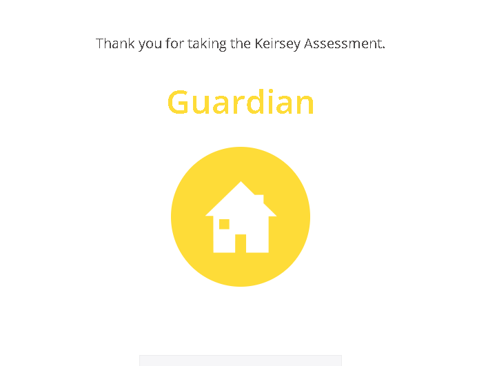

Student
My strongest trait is perseverance. This trait has a significant impact on my academic life as it helps me stay focused and motivated, especially during challenging times. It allows me to overcome obstacles and persist in achieving my academic goals. Additionally, my positive outlook on challenges contributes to a healthy academic mindset.
One of my favorite scenes is from the anime "The Misfit of Demon King Academy," where Anos Voldigoad demonstrates unmatched power and determination. His ability to challenge norms and reshape the world is awe-inspiring.
My personal motto, inspired by Anos Voldigoad, is "Challenge the impossible, and redefine what is possible."
Anos Voldigoad is my hero because of his unyielding resolve, intelligence, and the ability to bring about change in seemingly impossible situations. I admire his courage to question authority and shape his destiny according to his beliefs.
Keirsey Temperament Sorter personality test. Here are the results:
Upon reflection, I believe the test provides a general overview of personality tendencies but at the same time it may be inaccurate to some extend as I'm not too sure I would have a personality type of 'Guardian'.